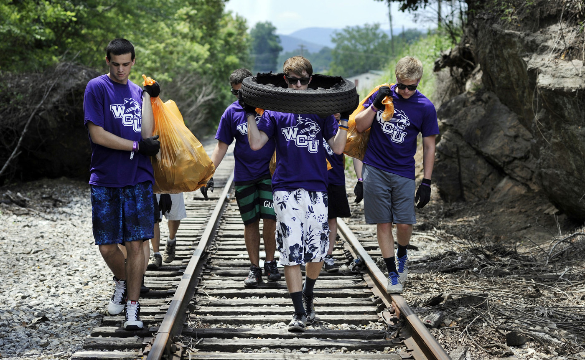

WHAT IS THE FIRST YEAR EXPERIENCE?
First Year Experience provides a holistic approach to support your
total student experience as a new member of the WCU community. You will have many questions, want directions, and need guidance. WCU has a wealth of resources and opportunities and we
are eager to help you find what you need when you need it, whether you are a freshman, early college, or transfer student.
DISCOVER COLLEGE
Become a member of your new community in a dynamic environment as you
experience intellectual life at the university level. Our Goal is to empower your personal confidence, engage you in the notions and ideals of community, and support your curricular and
co-curricular experiences.
- WHEE Call U is a mid-semester campaign designed to personally welcome each new student to WCU and make sure you are doing well. So answer the phone, it may just
be the Chancellor calling you!
- The FYE Bookmark Journey will challenge you to discover and utilize the wealth of resources that are here to empower your success.
- First Generation College Students. As the first person in your family to attend college, you are starting a new family tradition and we are here to offer you the
guidance that will help you meet your goals. Learn more about the FGCS Mentor Program!
- Transfer Ambassadors serve as a resource for information and guidance in your transition to WCU. They will follow up with you during your first semester to
ensure you are having a successful experience.
CALIBRATE YOUR COMPASS with FYE Transition Pathways
Develop friendships and experience learning as a dynamic exchange of ideas and perspectives during your transition to college.
Transition Pathways will introduce you to college life, the academic
and procedural elements of the university, and to the academy and community. You may select from several options.
- Transition Pathways Courses: Select from a variety of course-based experiences offered as College Transitions and Learning Communities.
- Peer Mentors and Peer Leaders will introduce you to upper-class peers who have already been where you are now – and are eager to help you feel right at home, answer questions, and offer advice.
- FYE Summer invites students to launch their First-year Experience at Western Carolina University during a 5-week summer session. FYE Summer students are on the fast-track to success with this early start!
BE INVOLVED In Your Success!
Learning does not stop at the classroom door and FYE aims to help you make connections between academic and co-curricular experiences through opportunities such as:
- FOCUS: First-year Opportunities for Community and University Service—an opportunity designed specifically for new students. FOCUS: What do you care enough about to do something about!
- Guest scholars, artisans, and professionals will engage you as an active participant in your learning through FYE workshops and special events.
- The Transfer Student Organization (TSO): Develop your support networks as you participate in various social activities and programs, service and community
outreach projects, and academic informational sessions designed to enhance the transfer experience.
- Tau Sigma is an academic honor society designed specifically to "recognize and promote the academic excellence and involvement of transfer students. Tau Sigma members become active at the
university as leaders and role-models.
THINK FIRST: Academics Empower Your Success!
Discover the answers you need as you select classes, build a schedule, and begin your
academic pathway!
Learn more about first-year academics
here.
- First-Year Seminars (FYS) invite you to experience intellectual life at the university level.
- Learning Communities: Expand your horizons in a cohort of 2 or 3 classes connected by learning goals.
- Transition Pathway Courses will empower your success as you adapt to college life and learning
- WCU Liberal Studies Program: all students complete required courses in the liberal studies program.
CONNECT THE DOTS with FYE programs and opportunities
Develop friendships and experience learning as a dynamic exchange of ideas and perspectives during your transition to campus life. Learning Communities offer many choices that include
living-learning communities, academic cohorts, and residential college models.
- One Book 2015. Join the conversation about One Book... Engage with faculty, staff, and your peers in the WCU community as you launch your college career with
this common reading and
intellectual experience.
- The 3.0 Club invites students to accept the challenge to excel academically in the first year, and to do so with a full support network ready to help you meet
your goals.
- Living-Learning Community (LLC): Strengthen the transition experience as you connect the classroom learning experience with residential programming and support in
a LLC.

EXPRESS YOURSELF and celebrate excellence
- EYE on FYE celebrates outstanding first-year students and their demonstrated commitment to the WCU Student Community Creed.
Learn more here!
- The First-year Advocate award, selected by students, recognizes faculty and staff members who make a difference in your life.
Lean more about the amazing
professionals with whom you will study
this year!
- FYE Journal is an annual publication intended to reveal where we have traveled during the past year and where we aim to go in the year to come.
This publication
will give you a great snapshot of FYE!
CONTACT:
First Year Experience
Division of Student Success in Academic Affairs
Phone: 828-227-3017
137 Killian Annex Building
Western Carolina University
Staff:
Glenda Hensley, Director - Email:
ghensley@wcu.edu
Janina DeHart, Assistant Director - Email:
jdehart@email.wcu.edu
Allison Cook, Administrative Assistant - Email:
acook@email.wcu.edu
Top of Page »